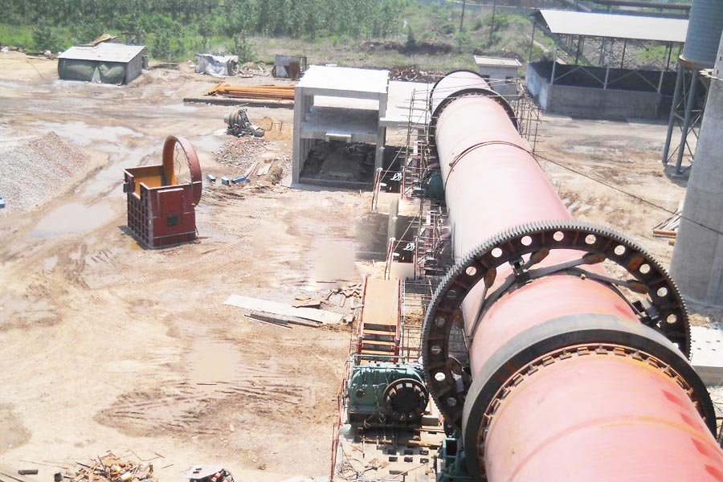

Construction waste crushing production line

Mobile construction waste crushing station for urban construction waste crushing.
burnt lime manufacturing process
burnt lime manufacturing process. Slaked lime (ie aging) derived from the lime and water effects, through reasonable industrial processing equipment, can be processed into high-quality calcium hydroxide (commonly known as hydrated lime), it can be used for a variety of industries. Company hydrated lime production line guidance related technologies, including production line can provide major package production line installation, process layout, process.
CAG Machinery provides crushing, screening, grinding equipment for the hydrated lime manufacturing procedure line.

Lime Manufacturing Processing
Ghana hydrated lime manufacturing process. Lime will be the high-temperature product of the calcination of limestone. Even though limestone deposits are discovered in every state, only a small portion is pure enough for industrial lime manufacturing. To be classified as limestone, the rock must contain a minimum of 50 percent calcium carbonate. When the rock contains 30 to 45 percent magnesium carbonate, it’s known as dolomite, or dolomitic limestone. Lime can also be manufactured from aragonite, chalk, coral, marble, and sea shells. The Standard Business Classification (SIC) code for lime manufacturing is 3274. The six-digit Source Classification Code (SCC) for lime manufacturing is 3-05-016. In some lime plants, the resulting lime is reacted (slaked) with water to form hydrated lime. The fundamental processes within the manufacture of lime are:(1) quarrying raw limestone; (two) preparing limestone for the kilns by crushing and sizing;(2) calcining limestone; (four) processing the lime further by hydrating; and (five) miscellaneous transfer, storage, and handling operations. A generalized material flow diagram for a lime manufacturing plant is given in Figure 11.17-1. Note that some operations shown may not be performed in most plants. The heart of the lime plant is the kiln. The prevalent type of kiln is the rotary kiln, comprising about 90 percent of all lime production in the Usa. This kiln is a lengthy, cylindrical, slightly inclined, refractory-lined furnace, via that the limestone and hot combustion gases pass countercurrently. Coal, oil, and gas may all be fired in rotary kilns. Item coolers and kiln feed preheaters of numerous types are generally utilized to recover heat in the hot lime product and hot exhaust gases, respectively. The subsequent most common type of kiln within the Usa is the vertical, or shaft, kiln. This kiln can be described as an upright heavy steel cylinder lined with refractory material. The limestone is charged in the top and is calcined as it descends slowly to release in the bottom from the kiln. A primary benefit of vertical kilns over rotary kilns is greater average fuel efficiency. The main disadvantages of vertical kilns are their fairly low production rates and the reality that coal cannot be utilized without degrading the quality from the lime produced. There happen to be couple of recent vertical kiln installations in the United States due to high item high quality needs Crushing Equipment for hydrated lime Jaw crusher: Primary crushing, high reliability and durability, top continuous crushing efficiency, excellent total crushing economy. Impact crusher: Secondary crushing, high reduction ratio, great cubical shape, less responsive to sticky material, versatile for quarrying and gravel pit industries, cement, concrete and asphalt recycling, and slag recycling. Cone crusher: Tertiary crushing, fine crushing; high capacity and yield, high equipment high quality, simple and cost-effective maintenance, easy to use. VSI crusher: Fine crushing,limestone aggregate production, limestone sand making equipment, superior cubically shaped item, improved energy efficiency, lower wear costs, improved crushing performance and control, versatility to operate in numerous demanding and diverse applications and so on. Grinding Mill for hydrated lime A process for fine ground and ultrafine ground limestone powder produced in a dry grinding mill in closed circuit with a high efficiency air classifier. Ground limestone powder from limestone grinding equipment differs from 0.5mm to 15 micron. Ball mill : Single stage fine grinding, regrinding, second stage in two stage grinding circuits, size range from 0.4mm to 0.075mm, product size is typically 35 mesh or finer. Raymond mill: Primary grinding, secondary grinding, regrind applications, fine grinding, lime slaking with versatile application.
Ghana hydrated lime manufacturing process manufacturer. Lime production line crushing process: chunks of limestone through silo consists of vibrating feeder evenly sent a broken (jaw crusher) coarsely crushed limestone crushing by conveyor belt after two to break (Crusher or cone crusher) for further crushing; after crushing limestone conveyor belt fed by the vibrating screen for screening, screening out of several different sizes, different specifications of the limestone, limestone meet the size requirements of the finished product conveyor belt sent the finished windrow
Leave Me A Message, Now
If you have any questions regarding equipment prices, production line configuration or other problems, you can send a message to us, we will contact you soon.